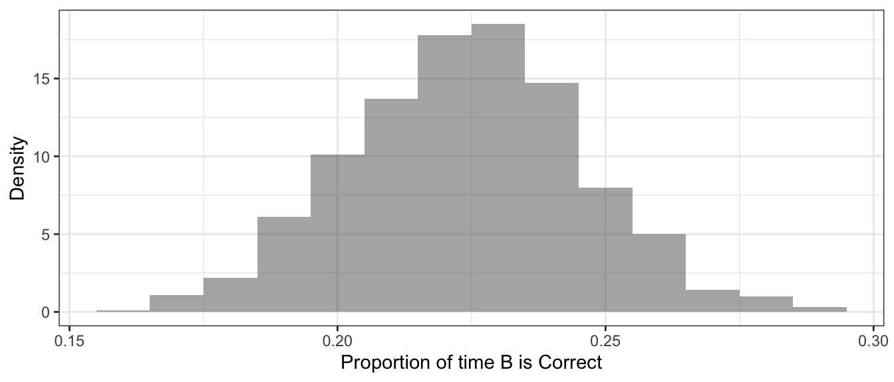

Sampling Distribution Shapes
Previously, we played around with a web app that let us view the sampling distribution of the mean in different scenarios – different populations to sample from, and different sample sizes.

There’s also an alternative, similar app if you want a change of pace.
Return to an app if needed – or just search your memory – to figure out:
- What PDF is the closest match to the sampling distribution (in most cases)?
- When (under what conditions) is it a good match?
Central Limit Theorem
Textbook reference: Intro to Modern Statistics Ch. 5.3
The answers to those two questions are provided by the Central Limit Theorem: Sampling distribution will be normal, as long as the sample size is big enough.
(“Big enough” is a relative term – how big is big enough depends on how far from normal the parent population distribution is, and also what the sample statistic of interest is.)
Central Limit Theorem, Again
The CLT is, as its name hints, central to much of the statistics we will learn in the rest of this course. So it’s worth considering from a few angles to make sure it’s set in your mind!
Check out this interactive visualization that brings the CLT to life in another way.
Motivation: So what?
We noticed before that sampling distributions (whether ideal ones, or bootstrap ones, or randomization ones) tend to be Normal. Why re-focus our attention on it now?
The normality of most sampling distributions gives us an alternative way to compute CIs and p-values.
Not at first, but eventually, this will lead us to some shortcuts that let us compute CIs and p-values without any resampling.
But first, z-scores
Textbook reference: Intro to Modern Statistics Ch. 5.3.2
A quantity known as a z-score will prove useful in our next explorations. What is it? (Watch the 3.5-minute video…)
(You can also watch directly on YouTube if you prefer.)
CIs with Varying Confidence Levels
So…how does the Central Limit Theorem actually help us? And why that detour about z-scores?
Until now, if you wanted to compute a confidence interval – especially with a confidence level other than 95% – you generated a bootstrap distribution and then used cdata().
An AP CI (Review)
For example, the dataset APMultipleChoice contains the answers (A, B, C, D, or E) to 400 questions from a sample of publicly available AP tests, in the variable Answer. Use your bootstrap skills to find a 98% CI for the proportion of the time that “B” is the right answer.
prop(~_____, data = ______)
boot_dist <- do(1000)*prop(~______, data = _____)
head(boot_dist)prop(~Answer == "B", data = APMultipleChoice)
boot_dist <- do(1000)*prop(~Answer == "B",
data = resample(APMultipleChoice))
head(boot_dist)boot_dist <- do(1000)*prop(~Answer == "B",
data = resample(APMultipleChoice))
head(boot_dist)
gf_histogram(~prop_TRUE, data = _____)
cdata(~prop_TRUE, data = _____, p = _____)boot_dist <- do(1000)*prop(~Answer == "B",
data = resample(APMultipleChoice))
head(boot_dist)
gf_histogram(~prop_TRUE, data = boot_dist)
cdata(~prop_TRUE, data = boot_dist, p = 0.98)You should find a CI that ranges from about 0.18 to 0.27 or so.
It’s Normal!
We can get that CI another way, though. We will use the fact that the sampling distribution is pretty much Normal. Remember, it looked like this:

And a normal distribution fits it well.

CIs from Normal Quantiles
Instead of using cdata() to get our CI, we could have used qnorm() or xqnorm() to find the edges of the middle 98% (or whatever-percent-we-want) of the Normal curve that approximates our bootstrap sampling distribution.
Whoa, that’s a mouthful. What are we trying to do again?
- Generate a bootstrap distribution
- Fit a normal distribution to it (with mean = our sample stat and sd = our SE = the standard deviation of the bootstrap sample stats)
- Use
qnorm()to find the sample stat values that bound the middle 98% of the distribution
We should be pretty solid on 1) and 2) above. Let’s do a 4-minute review of 3), shall we?
(You can also watch directly on YouTube if you prefer.)
Your Turn to Practice
Time to put your xqnorm() skills to the test!
Assume you have a bootstrap distribution for a mean that is well approximated by a normal distribution with mean 34 and sd 11. What is a 97% confidence interval for the mean?
xqnorm(___, mean = ___, sd = ___)
xqnorm(___, mean = ___, sd = ___)xqnorm(___, mean = 34, sd = ___)
xqnorm(___, mean = 34, sd = ___)xqnorm(___, mean = 34, sd = 11)
xqnorm(___, mean = 34, sd = 11)xqnorm(0.015, mean = 34, sd = 11)
xqnorm(___, mean = 34, sd = 11)xqnorm(0.015, mean = 34, sd = 11)
xqnorm(0.985, mean = 34, sd = 11)Did you find out that you are 97% confident that the true mean is between 10.13 and 57.87?
Another One
One more to try. The bootstrap sampling distribution for a proportion is well approximated by a normal distribution with mean 0.67 and standard deviation 0.03. What is a 99% CI for the proportion?
xqnorm(___, mean = ___, sd = ___)
xqnorm(___, mean = ___, sd = ___)xqnorm(___, mean = 0.67, sd = ___)
xqnorm(___, mean = 0.67, sd = ___)xqnorm(___, mean = 0.67, sd = 0.03)
xqnorm(___, mean = 0.67, sd = 0.03)xqnorm(0.005, mean = 0.67, sd = 0.03)
xqnorm(___, mean = 0.67, sd = 0.03)xqnorm(0.005, mean = 0.67, sd = 0.03)
xqnorm(0.995, mean = 0.67, sd = 0.03)Did you find that you are 99% confident the true proportion is between 0.593 and 0.747?
Never Again
Well, we did it – we found CIs using a normal distribution fitted to a bootstrap distribution and then some qnorm() calculations.
But it was a bit of a pain!
Plain old cdata() was simpler to code and think about.
So why bother with all that stuff we just did?
A Pattern
Did you notice any patterns in the xqnorm() output you saw for different CI calculations?
As a hint, below are two different 95% CIs for two different scenarios.


The z-scores
The pattern to notice here is in the z-scores of the boundaries of the CIs (they label the vertical lines that mark the quantiles of interest).
The z-scores of the edges of a 95% CI are always -1.96 and 1.96.
In other words, the boundaries of a 95% CI are always 1.96 SEs away from the center of the bootstrap distribution.
Heyyyyy… - that is where we got the formula
\[ \text{sample stat} \pm 1.96(SE)\]
for a 95% CI (and why it should only be used if the distribution looks normal)!
This is also why the multiplier we use on the SE to get the margin of error for a CI is sometimes called the “critical value” \(z^*\): the “z” is for “z-score”. This leads to a generalized version of our formula:
\[ \text{sample stat} \pm z^*(SE)\]
\(z^*\) for Other Confidence Levels
For any confidence level we choose, we can find a multiplier \(z^*\) – and it depends only on the chosen confidence level, not the mean and standard error of our particular sampling distribution!
Now this really will make our calculations a bit easier.
Once we find the \(z^*\) values for a set of confidence levels, we are free to calculate CIs to our hearts’ content without further use of xqnorm().
Often we use the “standard normal” or “z” distribution – a normal distribution with mean 0 and sd 1 – to find these. (This is nice because the x-axis value we get back from R is a z-score, so we don’t need to refer to the figure from xqnorm() to get \(z^*\).)
For example, for 95% confidence:
xqnorm(0.975, mean = 0, sd = 1)## ## If X ~ N(0, 1), then## P(X <= 1.959964) = 0.975## P(X > 1.959964) = 0.025## 
## [1] 1.959964Well, we did already know that!
Find Yourself some z*s
It’s your turn – compute \(z^*\) values for 80%, 90%, 97%, 98%, and 99% confidence. Check your work against the table below.
xqnorm(____, mean = ___, sd = ___)xqnorm(____, mean = 0, sd = 1)# for 80%
xqnorm(0.9, mean = 0, sd = 1)# for 90%
xqnorm(0.95, mean = 0, sd = 1)| Confidence Level | z* |
|---|---|
| 80 | 1.282 |
| 90 | 1.645 |
| 95 | 1.96 |
| 97 | 2.17 |
| 98 | 2.326 |
| 99 | 2.576 |
More Interactive
If you want a more interactive interface to make these kinds of calculations, you may want to check out and bookmark your favorite of these apps:
Use Your z*s
| Confidence Level | z* |
|---|---|
| 80 | 1.282 |
| 90 | 1.645 |
| 95 | 1.96 |
| 97 | 2.17 |
| 98 | 2.326 |
| 99 | 2.576 |
Recap
Now you know how to use normal distributions and z-scores to allow calculation of confidence intervals with any confidence level, not just 95%, given a sample stat and the standard error of the bootstrap sampling distribution.
So far…well, to be honest, it’s a bit underwhelming, isn’t it? It is really no simpler than the cdata() method.